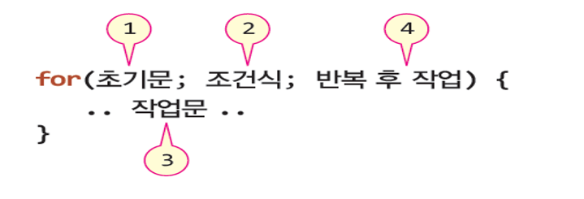
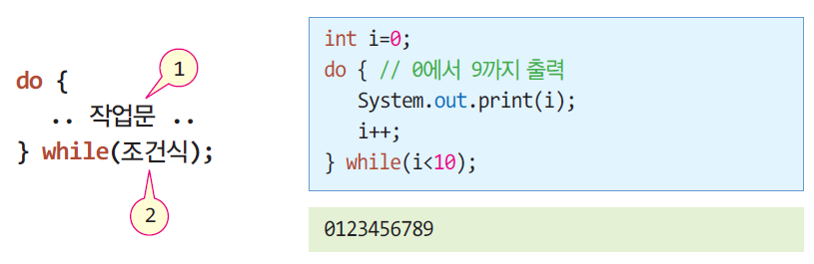
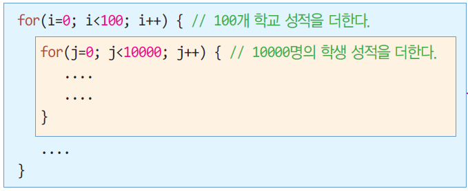
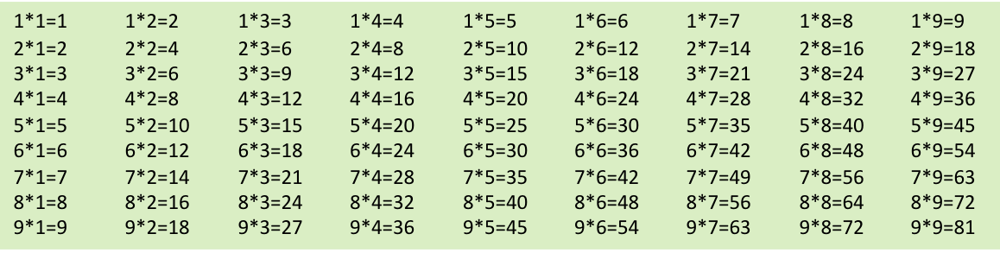
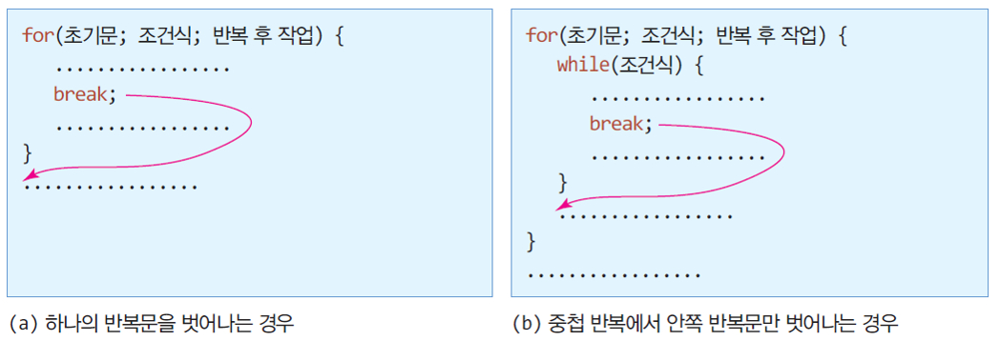
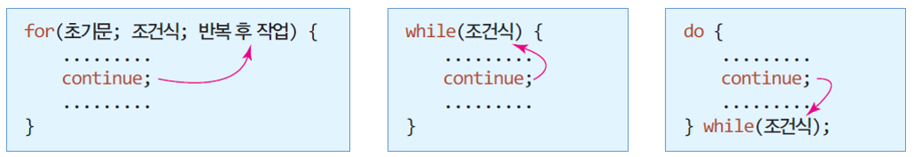
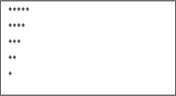

1에서 9까지 숫자를 출력하는 Java 프로그램을 작성해 보자
public class PrintNumberSample {
public static void main(String[] args) {
System.out.print(1);
System.out.print(2);
System.out.print(3);
System.out.print(4);
System.out.print(5);
System.out.print(6);
System.out.print(7);
System.out.print(8);
System.out.print(9);
}
}가장 많이 사용하는 반복문

예제 1
for 문을 이용하여 1부터 10까지 덧셈으로 표시하고 합을 출력하라.
public class ForSample1 {
public static void main(String[] args) {
int i, sum=0;
for(i=1; i<=10; i++) { // 1~10까지 반복
sum += i;
System.out.print(i); // 더하는 수 출력
if(i<=9) // 1~9까지는 '+' 출력
System.out.print("+");
else { // i가 10인 경우
System.out.print("="); // '=' 출력하고
System.out.print(sum); // 덧셈 결과 출력
}
}
}
}출력 결과
1+2+3+4+5+6+7+8+9+10=55예제 2
for 문을 이용하여 0부터 10까지 숫자 중 짝수 만을 출력하라.
public class ForSample2 {
public static void main(String[] args) {
for(i=0; i<=10; i=i+2) {
System.out.println(i);
}
}
}public class ForSample2 {
public static void main(String[] args) {
for(i=0; i<=10; i++) {
if (i%2 == 0)
System.out.println(i);
}
}
}do-while 문의 구성과 코드 사례

예제 3
do-while문을 이용하여 'a'부터 'z'까지 출력하는 프로그램을 작성하라.
public class DoWhileSample {
public static void main (String[] args) {
char a = 'a';
do {
System.out.print(a);
a = (char) (a + 1);
} while (a <= 'z');
}
}실행결과
abcdefghijklmnopqrstuvwxyz다음 코드의 출력을 쓰시오.
int n = 10;
while (n>0) {
System.out.println(n);
n = n - 3;
}위와 동일한 결과가 나올 수 있도록 프로그램을 for 문과 do-while 문으로 변경하시오
반복문이 다른 반복문을 내포하는 구조

예제
2중 중첩된 for문을 이용하여 구구단을 출력하는 프로그램을 작성하라.
public class NestedLoop {
public static void main(String[] args) {
for(int i=1; i<10; i++) { // 단에 대한 반복. 1단에서 9단
for(int j=1; j<10; j++) { // 각 단의 곱셈
System.out.print(i + "*" + j + "=" + i*j); // 구구셈 출력
System.out.print('\t'); // 하나씩 탭으로 띄기
}
System.out.println(); // 한 단이 끝나면 다음 줄로 커서 이동
}
}
}
반복문 하나를 즉시 벗어갈 때 사용

예제
exit
이 입력되면 while 문을 벗어나도록 break 문을 활용하는 프로그램을 작성하라.
import java.util.Scanner;
public class BreakExample {
public static void main(String[] args) {
Scanner scanner = new Scanner(System.in);
System.out.println("exit을 입력하면 종료합니다.");
while(true) {
System.out.print(">>");
String text = scanner.nextLine();
if(text.equals("exit")) // "exit"이 입력되면 반복 종료
break; // while 문을 벗어남
}
System.out.println("종료합니다...");
scanner.close();
}
}다음 코드의 출력을 쓰시오.
int n = 12;
while (n > 0) {
n = n - 2;
if( n == 6 )
break;
System.out.println(n);
}
반복문을 빠져 나가지 않고, 다음 반복으로 제어 변경

예제
1에서 10까지의 정수 중에서 짝수의 합을 구하여 출력하는 프로그램을 작성하라.
Public class ContinueExample {
public static void main(String[] args) {
int sum=0;
for(int i=1; i<=10; i++) {
if(i%2!=0) continue; // 짝수가 아닌 경우 더하지 않고 다음 반복으로 진행
else sum += i; // 양수인 경우 덧셈
}
System.out.println(“1에서 10까지의 정수 중에서 짝수의 합은 " + sum);
scanner.close();
}
}실행결과
1에서 10까지의 정수 중에서 짝수의 합은 30아래와 같이 출력되는 프로그램을 작성하라.

구구단 (1단-9단)을 아래와 같이 1줄에 3단씩 출력하도록 프로그램을 작성하시오.
1*1=1 2*1=2 3*1=3
1*2=2 2*2=4 3*2=6
1*3=3 2*3=6 3*3=9
1*4=4 2*4=8 3*4=12
1*5=5 2*5=10 3*5=15
1*6=6 2*6=12 3*6=18
1*7=7 2*7=14 3*7=21
1*8=8 2*8=16 3*8=24
1*9=9 2*9=18 3*9=27
4*1=4 5*1=5 6*1=6
4*2=8 5*2=10 6*2=12
4*3=12 5*3=15 6*3=18
4*4=16 5*4=20 6*4=24
4*5=20 5*5=25 6*5=30
4*6=24 5*6=30 6*6=36
4*7=28 5*7=35 6*7=42
4*8=32 5*8=40 6*8=48
4*9=36 5*9=45 6*9=54
7*1=7 8*1=8 9*1=9
7*2=14 8*2=16 9*2=18
7*3=21 8*3=24 9*3=27
7*4=28 8*4=32 9*4=36
7*5=35 8*5=40 9*5=45
7*6=42 8*6=48 9*6=54
7*7=49 8*7=56 9*7=63
7*8=56 8*8=64 9*8=72
7*9=63 8*9=72 9*9=81